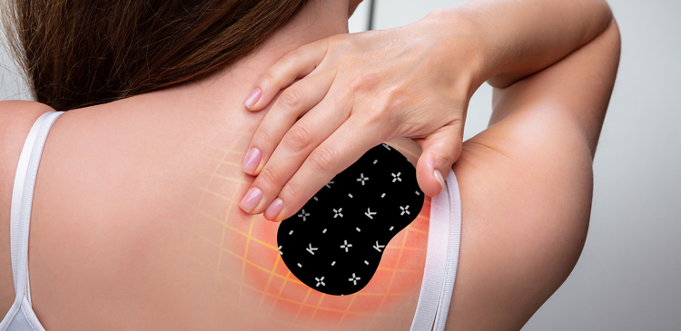
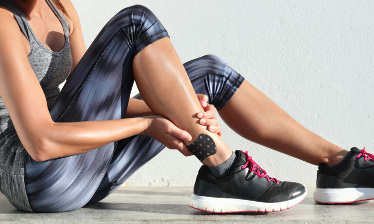

Powerful New Pain Patch Delivers Pin-Point Relief All Day and Night!
5 Specific Active Pain-Killers Plus CBD-Boost Technology Eliminates Stubborn Pain Fast!
Do you know the meaning of the word “synergy”? It means:
When many ingredients work together to become even more powerful as a whole.
That’s what thousands of people have discovered with the remarkable new KAYDIA PATENTED PAIN PATCH.
I’m sure you’ve all heard of the pain-relieving properties of CBD, Turmeric, and other powerful substances that have been proven in many studies to RELIEVE PAIN.
The big problem with all these things is that many of them can help relieve pain, but until now, there has not been a modern synergistic system that PINPOINTS AND DELIVERS PAIN-RELIEVING INGREDIENTS QUICKLY AND TO WHERE IT IS NEEDED MOST!
KAYDIA PATENTED PAIN PATCH is the result of intensive research into real word problems of pain relief.
Kaydia Patented Pain Patch Delivers Powerful Pain Medication That Can Help Stop:
Muscle aches and pain
Arthritis
Joint pain
Leg cramps
Neck and back pain
Deep-seated throbbing
Tightness and tension
Headaches
Migraines
Foot and muscle pain
Joint and bone pain
and many, many other forms of pain that nothing else you tried has helped!
KAYDIA PATENTED PAIN PATCH Delivers Long-Lasting Relief Directly to the Source of Your Pain!
They last for days and even weeks. Plus, they are comfortable to wear.
Odor-free, no weird smells

Sleek-looking and modern
Cooling and refreshing for sport
Comfortable to wear, day and night
Vitamins like B1 are good for your skin
It is made of the highest-quality premium, safe ingredients designed to target and eliminate pain!
Once you attach the attractive, gel-filled KAYDIA patch to the part of your body that hurts, the PENETRATING, TARGETED SYSTEM GOES TO WORK, DELIVERING PAIN RELIEF EXACTLY WHERE IT IS NEEDED!
PAIN STOPS QUICKLY, AND PAIN RELIEF INGREDIENTS ARE CONTINUALLY DISPENSED EVERY MINUTE!
MANY SAY THE PAIN STOPS ALMOST IMMEDIATELY!
We cannot disclose the full list of patented penetrating and pain relief ingredients, but these strong substances quickly target your pain points:
Arnica
Cannabidiol (CBD)
Curcumin
- Arnica, a convenient and reliable medicine for muscle pain, stiffness, and bruises.
- Cannabidiol (CBD) is a type of cannabinoid, a chemical found naturally in cannabis (marijuana and hemp) plants. CBD doesn’t cause the “high” feeling often associated with cannabis. That feeling is caused by tetrahydrocannabinol (THC), a different type of cannabinoid.
Some people with chronic pain use topical CBD products, in particular CBD oil, to manage their symptoms. CBD oil may reduce:
• Pain
• Inflammation
• Overall discomfort related to a variety of health conditions - Curcumin, an active compound in turmeric, is known for its antioxidant and anti-inflammatory activity that can promote healing. Like ginger, studies have found that turmeric may have pain-reducing power equal in some cases to that of prescription and over-the-counter medications.
Thousands Swear That Kaydia Patented Pain Patch Relieves Backache, Headaches, Leg Pain, and More!
Try Kaydia Now at the Incredible Introductory Price!
Based on solid research, KAYDIA has been developed specifically to make you feel better.
Thousands have discovered that simply placing these remarkable patches on their body can relieve many symptoms of chronic pain. Many report that Kaydia can start to work immediately, sometimes within minutes!
KAYDIA PATENTED PAIN PATCH is designed to precisely deliver relief to where you need it. It is non-toxic, safe, and you do not need to risk addiction like with opiates and other addictive drugs.
KAYDIA can bring relief to all sorts of aches and pains that affect the human body.
Aching arches, shooting back pain, sciatica, tiredness, tension headaches, shoulder pain, and more can all be helped by wearing these amazing patches.
Now you can get the benefits of all-day PAIN RELIEF EVERY MINUTE OF THE DAY OR AT NIGHTTIME.
KAYDIA also has extremely powerful PENETRANTS to help flush pain from the body. Many feel that wearing KAYDIA gives them increased energy.
If you suffer from burning pain, aching pain, or even stress pain due to poor circulation, you owe it to yourself to try a KAYDIA PATENTED PAIN PATCH!
Almost instantly, you can see for yourself that you will start to feel better!
Here’s What People Who Have Actually Tried Kaydia Pain Patch Have To Say:
David M., New York, NY
LEG PAIN GONE!
Jan 13, 2020
Verified Purchase
Every morning, when I would wake up in the morning, my legs would start to hurt as soon as I got out of bed.
When I got up, the pain got worse, and after a few hours on my feet I had to take off my pants and rub my legs.
Sometimes the pain was so bad I had to rest and stay off my feet until I could barely walk again.
Then I ordered KAYDIA PATENTED PAIN PATCH after a recommendation from a good friend. I had been reading about pain patches, but most people didn’t know which were effective. But I did a lot of research and discovered that KAYDIA PATENTED PAIN PATCHES were the ones that many people really felt got rid of their pain.
I’m a skeptic, so I wasn’t expecting much, but I tried them the same day they arrived, and I walked a few blocks to go shopping.
It was incredible. My legs stopped hurting. I don’t know how it happened, but the pain decreased dramatically. I order several more KAYDIA PATCHES so I would not risk running out.
Malcolm F., Eastampton, NY
LOWER BACK SCIATICA STOPPED HURTING!
Jan 27, 2020
Verified Purchase
I don’t know if you’ve ever had sciatica, but it is the worst pain you can imagine.
Just trying to sit up in bed in the morning is an exercise in pain. When you try to straighten up and stand up, the pain is so bad that you can scream. Sometimes it is impossible to stand up at all.
I used to have to stand for a half hour in a hot shower just to feel flexible, and I was taking dangerous pain killers. I was worried about getting addicted.
Just when I was at the end of my rope, I found out about KAYDIA PATENTED PAIN PATCH. I figured nothing else could work so I gave them a chance.
After A FEW DAYS OF WEARING KAYDIA PATCHES, I found that my sciatica symptoms were disappearing! I could finally easily sit up in bed and walk in the morning!
I stopped taking the pain killers and I felt great.
After using Kaydia patches for three weeks, I no longer had any back pain. And do you know what? I have a lot more energy too.
I don’t know how they work but they really do something for me. I recommended them to all my friends and family.
Karen R., Toronto, Canada
TENSION HEADACHES AND NECK PAIN RELIEVED
Feb 13, 2020
Verified Purchase
Ever since I can remember, I had tension headaches. My neck would feel all stiff and weird, and I would have pain in my neck and shoulders. Sometimes it was so bad that I had to lie down and rest in the dark.
I ordered a KAYDIA PATENTED PAIN PATCHES because a friend of mine in my yoga class had tried them and she said they had helped her back pain.
I got KAYDIA PATENTED PAIN PATCHES in the mail. They really looked cool (definitely not geeky), and I stuck them on where it hurt.
After I wore them only a few days, the tension in my neck got a lot better. I also noticed I had more energy to run, and the pain in my back felt better too. It was hard to believe, but the KAYDIA PATENTED PAIN PATCHES REALLY HELPED ME!
I used to get HEADACHES every couple of days. Since I started wearing KAYDIA PATENTED PAIN PATCHES it had been four weeks and I have not had one single headache.
Thousands feel KAYDIA PATENTED PAIN PATCHES are a unique product which combines targeting pain relief and premium ingredients to knock out the source of pain!
They are ideal for the people who have CHRONIC PAIN who want to apply pinpointed pain relief that really works!
Get them now with this special offer and save 50% over the retail price!